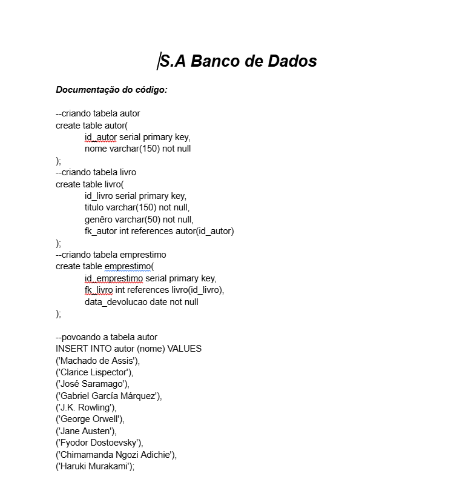

Banco de Dados
Indicada pelo professorDescrição
S.A de banco de dados, criamos um banco de dados de uma biblioteca, fizemos a documentação do nosso banco e os diagramas correspondentes.
Habilidades desenvolvidas
Não Listadas
Evidências — fotos e registros
